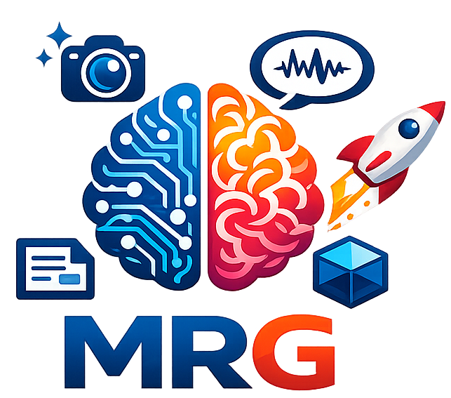
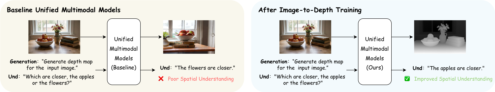
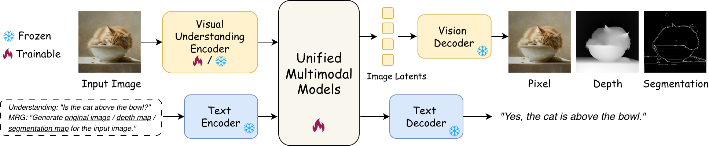
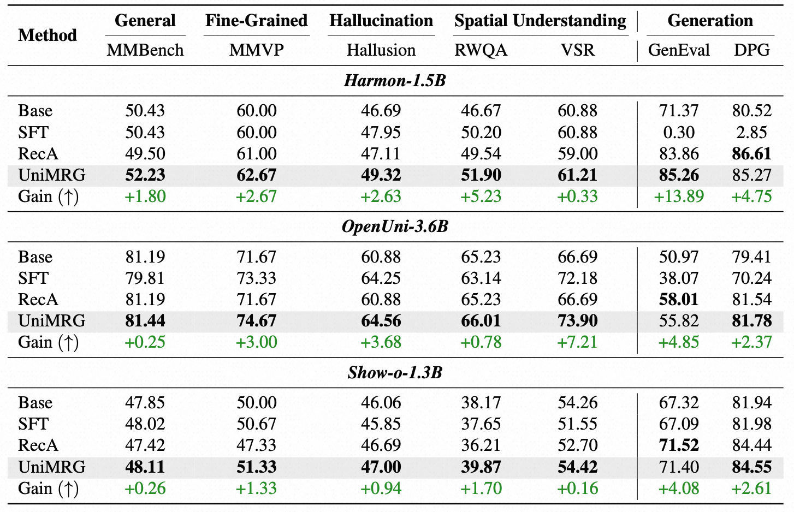
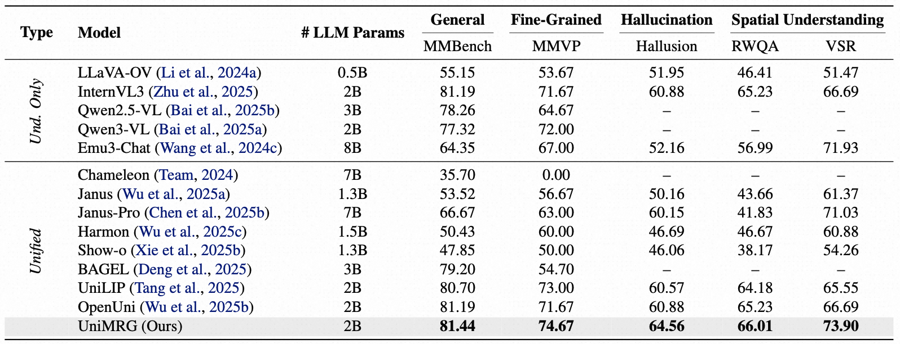
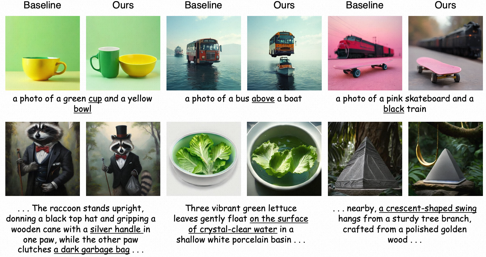
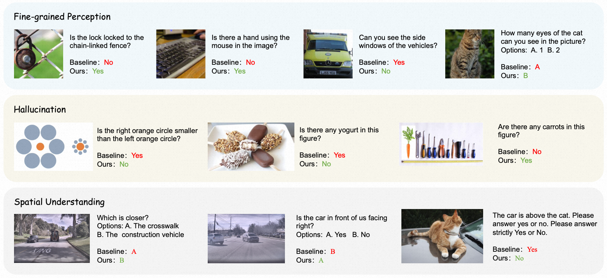

Generation Enhances Understanding in Unified MultimodalModels via Multi-Representation Generation

Generation Enhances Understanding in Unified MultimodalUnified Multimodal Models (UMMs) integrate both visual understanding and generation within a single framework. Their ultimate aspiration is to create a cycle where understanding and generation mutually reinforce each other. While recent post-training methods have successfully leveraged understanding to enhance generation, the reverse direction of utilizing generation to improve understanding remains largely unexplored. In this work, we propose UniMRG (Unified Multi-Representation Generation), a simple yet effective architecture-agnostic post-training method. UniMRG enhances the understanding capabilities of UMMs by incorporating auxiliary generation tasks. Specifically, we train UMMs to generate multiple intrinsic representations of input images, namely pixel (reconstruction), depth (geometry), and segmentation (structure), alongside standard visual understanding objectives. By synthesizing these diverse representations, UMMs capture complementary information regarding appearance, spatial relations, and structural layout. Consequently, UMMs develop a deeper and more comprehensive understanding of visual inputs. Extensive experiments across diverse UMM architectures demonstrate that our method notably enhances fine-grained perception, reduces hallucinations, and improves spatial understanding, while simultaneously boosting generation capabilities.

Overview of UniMRG.
The input image is fed into the visual understanding encoder, and the UMM is jointly trained on four tasks:
(1) Image reconstruction: reconstructing the input image to enhance generation capabilities.
(2) Image-to-depth: generating depth maps to learn geometric cues and spatial relations.
(3) Image-to-segmentation: generating segmentation maps to learn structural cues and region partitions.
(4) Image understanding: performing standard vision-language understanding tasks.
The understanding encoder is updated for UMMs with a shared encoder for generation and understanding; otherwise it is frozen.

Comparison of UniMRG with other post-training methods for UMMs. The green row shows the Gain (↑) over the base model. SFT denotes supervised fine-tuning using only the visual understanding loss.

Comparison with state-of-the-arts on visual understanding benchmarks. Our model is OpenUni post-trained with UniMRG.

Qualitative generation results. UMMs post-trained with UniMRG better follow prompts involving multiple objects, spatial relationships, and complex attributes.

Qualitative understanding results. UMMs post-trained with UniMRG exhibit improved fine-grained perception, reduced hallucinations, and enhanced spatial understanding.

@article{su2026generation,
title={Generation Enhances Understanding in Unified Multimodal Models via Multi-Representation Generation},
author={Su, Zihan and Wei, Hongyang and Cen, Kangrui and Wang, Yong and Chen, Guanhua and Yuan, Chun and Chu, Xiangxiang},
journal={arXiv preprint arXiv:2601.21406},
year={2026}
} Code
Code